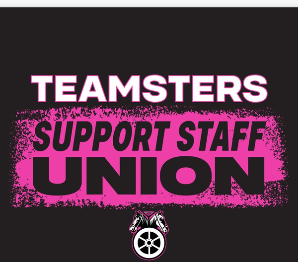
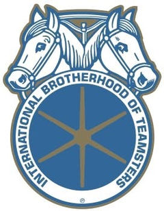

Organizing a union means coming together with your coworkers to negotiate as a group, rather than as individuals, over the terms of your employment — pay, benefits, job security, and working conditions. With enough support, you form a legally recognized bargaining unit that the employer must negotiate with in good faith.
Support staff at Penn State University. If you're unsure whether your position is included, reach out and we'll help you find out. Grad students and faculty have organized in their own units; this effort is specifically for support staff.
Yes. Your decision to sign up and show interest is kept confidential. Signing a card or adding your name is an early step that helps demonstrate support — it is not a public declaration.
Union dues are only collected once a contract is negotiated and ratified by the membership — and members vote on their own contract. There are no dues during the organizing process.
The Teamsters already represent thousands of technical service workers across Penn State and more than 20 commonwealth campuses, and recently won their strongest contract yet. That means real, local experience winning gains for Penn State workers — and the backing of one of the largest, most established unions in the country.
No. It is illegal under federal law for an employer to retaliate against, threaten, or discipline employees for exercising their right to organize. If you experience anything like this, document it and contact an organizer immediately.
An organizer will follow up with information and next steps. As more support staff join, the effort builds toward formally requesting recognition and, ultimately, negotiating a first contract that members vote to approve.
Beyond signing up, you can talk with coworkers, help spread the word, and join organizing conversations. Use the Sign Up button to get started and let us know you'd like to do more.